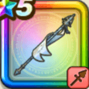

白き英雄の旗槍
攻略班 9.5点 / メタル超会心のかまえ王の威風覇軍の旗グロリアスフラッグ白き英雄のキングタイム我に続け希望の旗のもと
くわしい特徴
【レベル別習得スキル】 Lv1【ゴドハン】攻撃力+5 Lv1【守り人】守備力+5 Lv1【二刀】二刀流時の斬撃・体技によるダメージ+5% Lv10メタル超会心のかまえ（消費MP：最大MPの15%）次のターンまで受けるダメージを一部を除き半減し、次のターンにおこなう攻撃が超会心の一撃に変化する(戦闘中2回のみ使用可能) Lv15王の威風（消費MP：25）自身と両隣の味方にテンションを下げる効果を無効化する効果を付与(効果4ターン) Lv20覇軍の旗（消費MP：50）敵1体に威力800%(味方のテンションに応じて最大1,500%)のバギかギラ属性の斬撃ダメージを与え、テンションを確率で1～2段階下げる Lv30グロリアスフラッグ（消費MP：60）敵全体にメラかデインの710%斬撃ダメージ(メタル系に+99)を与えHP30%以下の敵を崩壊させる。敵の数が多い程会心率UPと崩壊条件緩和 Lv33けもの系へのダメージ+5% Lv36悪魔系へのダメージ+5% Lv40攻撃力+12 Lv50白き英雄のキングタイム（消費MP：12）戦闘開始時にまれに味方全体を優先して行動させテンションを確率で1段階上げる。敵にメタル系が含まれているなら必ず発動する Lv50我に続け（消費MP：19）戦闘開始時に自身のテンションを確率で2段階上げ、右隣の味方のテンションを確率で1段階上げる Lv50希望の旗のもと（消費MP：0）戦闘中自身が会心の一撃を1回発生させると自身のMPを一定量回復し、テンションが一番低い味方1人のテンションを確率で1段階上げる 【限界突破スキル】 1凸スキルの斬撃・体技ダメージ+7% 2凸スキルの斬撃・体技ダメージ+7% 3凸スキルの斬撃・体技ダメージ+7% 4凸スキルの斬撃・体技ダメージ+7%